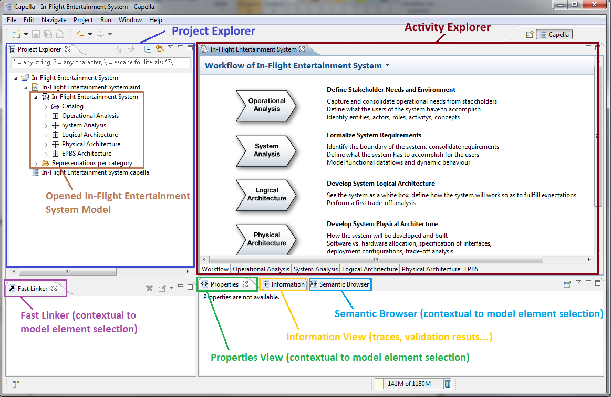

Capella Perspective Overview
Capella is en Eclipse workbench. It comes with a specific Perspective aggregating all the Views required while modeling.
The Capella Perspective contains:
- The
Project Explorer that is a file system explorer showing all the resources available in the current Workspace.
- The
Editor containing both the diagrams and the Activity Browser
- The
Properties View displaying the features of the model element currently selected in the model explorer or in a diagram.
- The
Information View displaying Validation results and miscellaneous additional messages
- The
Semantic Browser displaying all relationships outgoing and incoming from / to the model element currently selected in the model explorer or in a diagram.
- The
Outline view enabling to see the focus of the current diagram view compared to the entire diagram.
